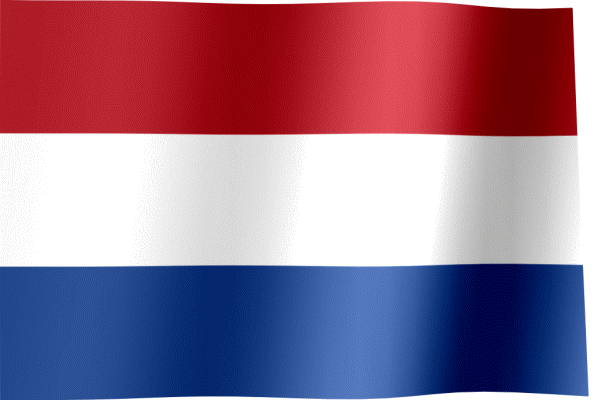

<!DOCTYPE html>
<html>
<head>
  <title>BIG MAP with Polygon & Flag Hover</title>
  <meta charset="utf-8" />
  <meta name="viewport" content="width=device-width, initial-scale=1.0">

  <link
    rel="stylesheet"
    href="https://unpkg.com/leaflet/dist/leaflet.css"
  />
  <style>
    html, body {
      height: 100%;
      margin: 0;
      padding: 0;
    }
    #map {
      height: 100%;
      width: 100%;
      display: block;
    }
    /* Style popup to remove background & border for the flag */
    .flag-popup .leaflet-popup-content-wrapper {
      background: transparent;
      border: none;
      box-shadow: none;
    }
    .flag-popup .leaflet-popup-tip {
      display: none;
    }
  </style>
</head>
<body>

<div id="map"></div>

<script src="https://unpkg.com/leaflet/dist/leaflet.js"></script>
<script>
  const mapWidth = 18657;
  const mapHeight = 18658;

  const map = L.map('map', {
    crs: L.CRS.Simple,
    minZoom: -5,
    maxZoom: 4,
    zoomSnap: 0.1
  });

  const bounds = [[0, 0], [mapHeight, mapWidth]];
  L.imageOverlay('BIG MAP.png', bounds).addTo(map);
  map.fitBounds(bounds);

  // Click to add marker with pixel coordinates popup
  let currentMarker = null;
  map.on('click', function(e) {
    const pixelX = e.latlng.lng.toFixed(0);
    const pixelY = e.latlng.lat.toFixed(0);

    if (currentMarker) {
      map.removeLayer(currentMarker);
    }

    currentMarker = L.marker(e.latlng).addTo(map);
    currentMarker.bindPopup(`Pixel coordinates:<br>X: ${pixelX}<br>Y: ${pixelY}`).openPopup();
  });

  // Polygon coordinates (converted to [lat, lng] = [Y, X])
  const polygonCoords = [
    [1799, 18656],
    [678, 17086],
    [2387, 16486],
    [3324, 18656]
  ];

  const polygon = L.polygon(polygonCoords, {color: 'blue'}).addTo(map);

  // Popup with flag image for hover
  const flagPopup = L.popup({
    closeButton: false,
    autoClose: false,
    closeOnEscapeKey: false,
    closeOnClick: false,
    className: 'flag-popup'
  }).setContent(''); // change 'flag.gif' to your flag image path

  polygon.on('mouseover', function(e) {
    flagPopup.setLatLng(e.latlng).openOn(map);
  });

  polygon.on('mouseout', function() {
    map.closePopup(flagPopup);
  });
</script>

</body>
</html>
